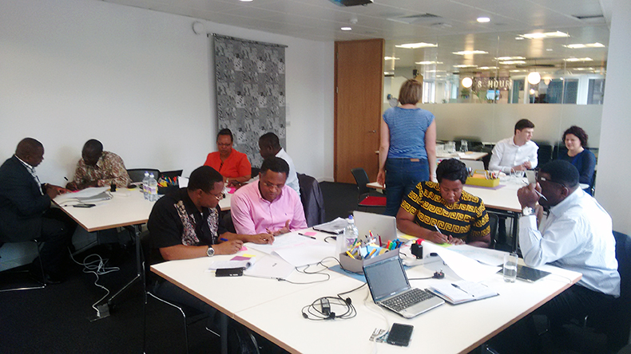

Peer learning helps Tanzania reach new ground with open data
When we introduced Tanzanian open data officials to their UK counterparts they shared home truths about problems, gaining new perspective and inspiration to engage users, communicate more and seek support from those who can help
Learning from peers is essential to building momentum behind new open data programmes. As part of our work with the Tanzanian government we were delighted to facilitate their meeting with key figures from government, NGOs, businesses, NGOs and startups in the UK, during a London Study Tour.
The tour was designed to be an immersive learning experience.
Around a busy schedule of meetings, ODI trainers provided space for participants to reflect upon what they had heard and apply it to planning the next stages of their own open data initiative in Tanzania. By enabling an open exchange of ideas and experiences, Tanzania will be able to leapfrog some of the problems that early adopters faced and quickly create impact.

One of the first themes to emerge from meetings with UK officials was the need to ‘bust the myth’ of the UK’s open data journey. UK officials who had been involved in open data reflected that it is often easy to look back, or from the outside, with rose-tinted spectacles – focussing on successes while obscuring difficulties and failures. But exposing these blind spots is essential if others are to learn from your experience. Several participants said that learning the UK faced similar challenges to those they face in Tanzania was their most important takeaway.
‘Make open data essential’
During a Q&A session with Antonio Acuna, head of the UK Government open data portal data.gov.uk, one of the participants asked how to make open data initiatives sustainable when faced with political transitions. Acuna, who advises governments on their data strategies, explained:
You need to turn open data into an asset that government can use to achieve its goals. Make open data essential to the flows between ministries, to how government works.
The team came away with a strong sense that successful initiatives were not about technology but about changing culture and behaviour. This was echoed by Thom Townsend, who leads on open government and transparency at the Cabinet Office. Townsend explained that ‘dogfooding’ is one way to drive this within government. The principle, raised by UK Minister for Digital Policy Matt Hancock in a speech at the 2015 ODI Summit, is that using your own product in your day-to-day operations is the best way to ensure it is of a high quality (the term originates from the story of the Kal Kan Pet Food principle eating his own dog food in front of shareholders to prove its quality).
The Tanzanian team recognised the value in this: if their government came to rely upon the data it produced, there would be a strong incentive to improve data quality.
Engaging with civil society
The Tanzanian delegates also discussed with Thom the need to foster a trusting relationship between government and civil society with regard to the release of data. He told them that, if channels of communication were open, users could help prioritise the release and maintenance of high value datasets and civil servants could be open about the difficulties they faced in releasing data with scarce resources. These conversations can take place at formal meetings, such as the Open Data User Group, or informally on Twitter and at community events. Essentially, the user community could empower civil servants within governments to release more data by supporting their efforts more.
This is an important lesson. It is well documented that nascent open data initiatives often struggle to connect with user communities. According to the 2015 Open Data Barometer Report, ‘Africa is lagging behind other regions in the use and impact of open data’. By the end of the week, the team understood the vital role that civil society plays, and the need to engage with innovation hubs, businesses, civil society organisations (CSOs), universities and others to achieve impact with open data.
To develop this understanding they spoke to CSOs and non-governmental organisations (MySociety, Publish What You Fund and Indigo Trust) and startups (WeFarm and Podaris). These meetings allowed discussion of how governments can work with such organisations, in practice as well as theory.
For instance, Kenny Ewan, CEO of WeFarm – an app that helps farmers in East Africa access and share information – has wanted to launch his product in Tanzania for some time, having launched successfully and reached over 70,000 users in Kenya. He made connections with the Tanzanian government, who were impressed by the practical benefits his app could bring to farmers and now plan to help him navigate the challenges of reaching a new market in Tanzania.
The final day of the tour was set aside for the team to reflect and plan their next steps back home in Tanzania. This was essential to capturing as much of what had been heard as possible, taking stock and ultimately making the most of it.
High on the priority list was to raise awareness about their initiative by communicating it widely and to set out a timeline of specific actions. They felt that the tour would make a big contribution to their initiative, having given them practical ideas for how to gain pace and reach new ground with open data in Tanzania.
Tom Sasse is Graduate Consultant at the ODI. Follow @sassenach93 on Twitter.
If you have ideas or experience in open data that you'd like to share, pitch us a blog or tweet us at @ODIHQ.